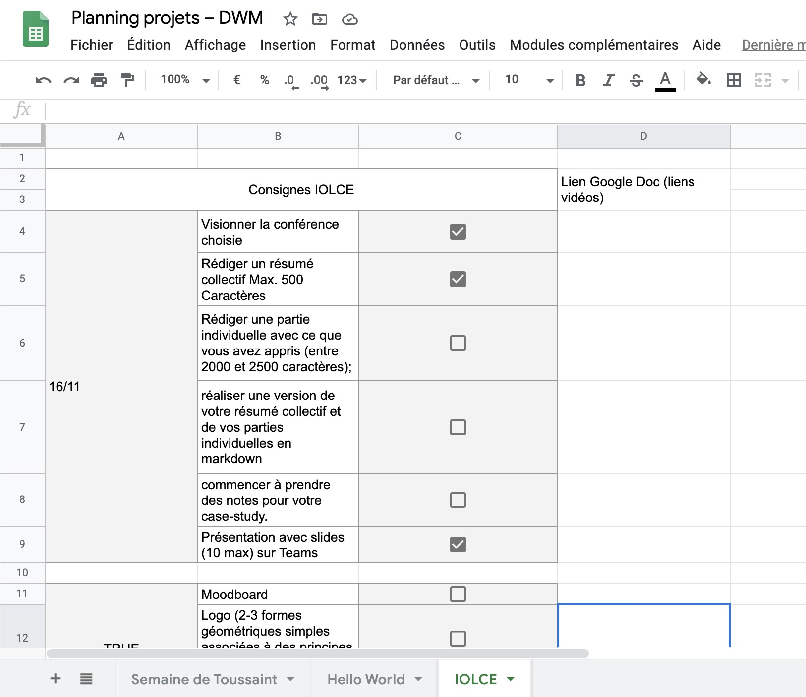
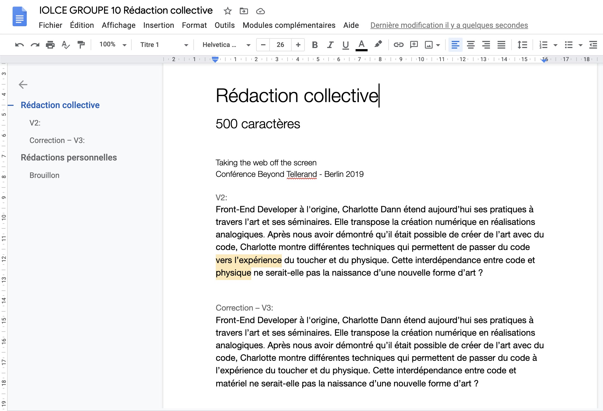
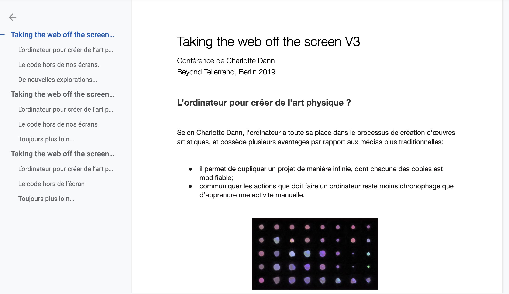
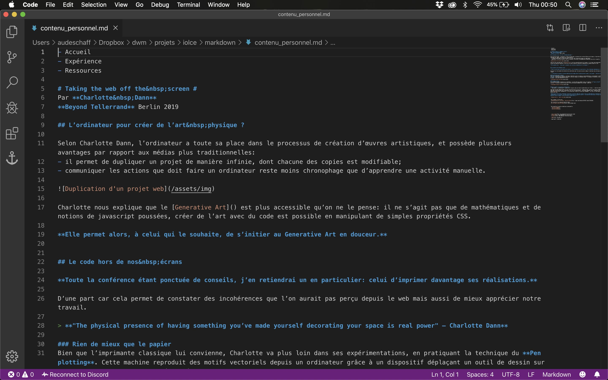
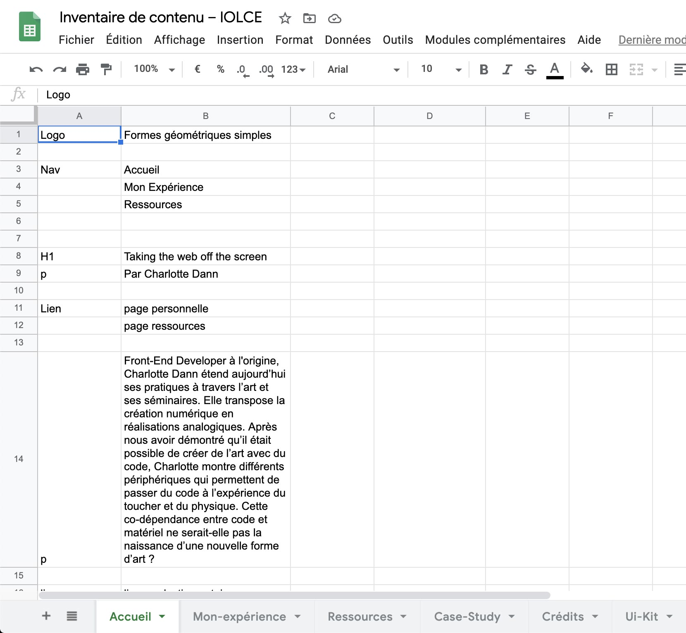
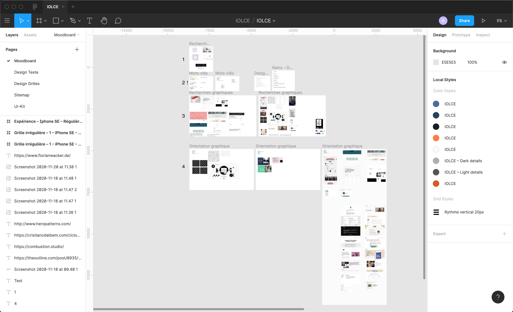
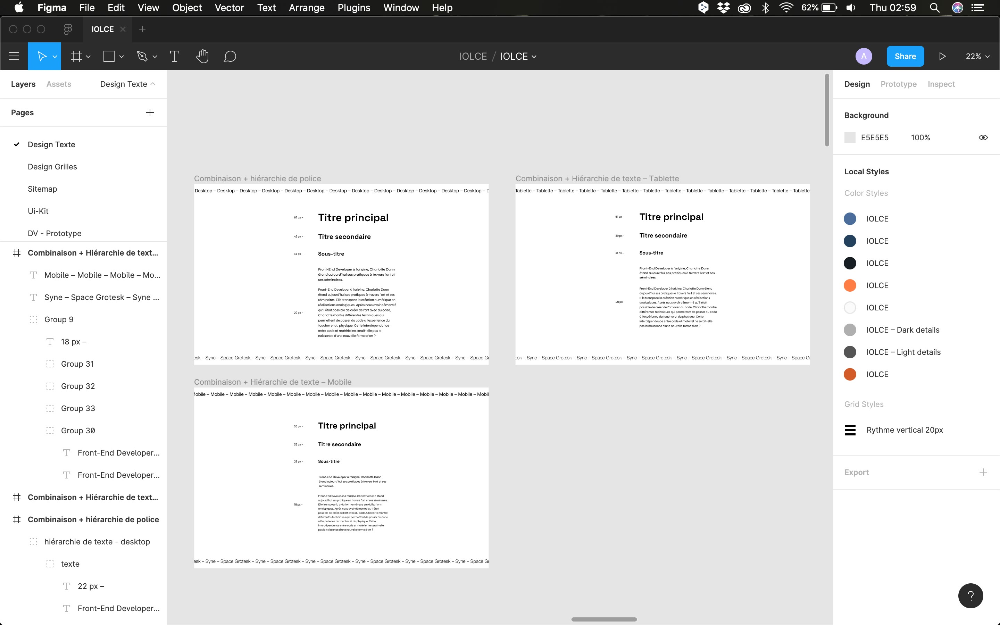
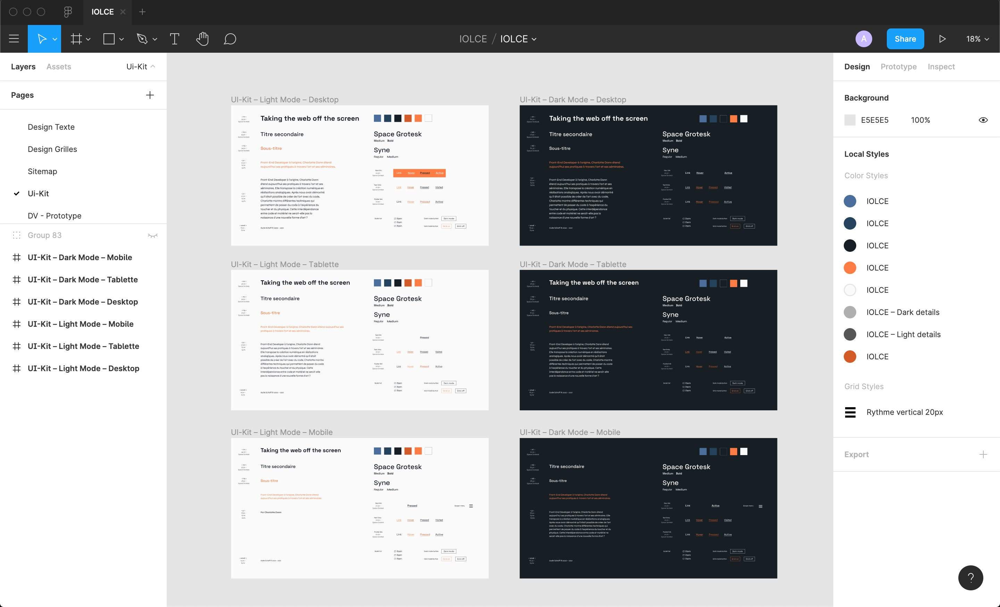
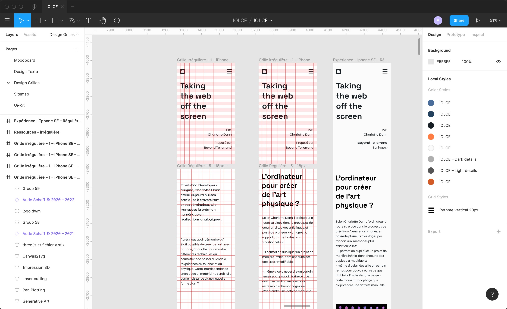
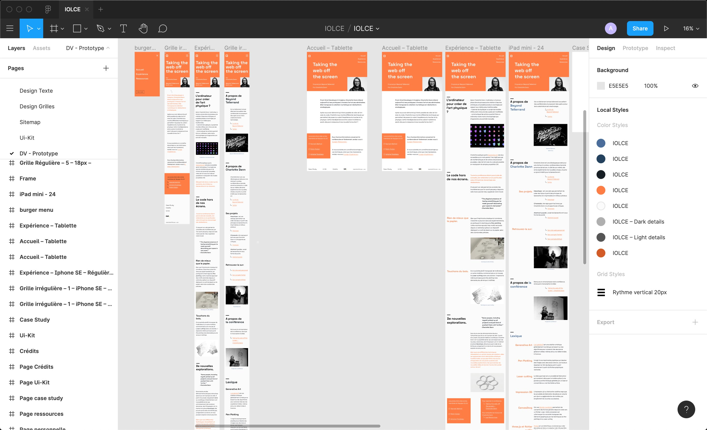

30 octobre 2020. le top départ est donné pour le deuxième projet proposé par la DWM:
IOLCE ou «Input Output Lire et Communiquer sur écran». De ces lettres, se
dégage ce
qui allait être notre activité principale pour les 4 semaines à suivre. C’est-à-dire de découvrir et
analyser
une conférence, pour ensuite retranscrire les notions importantes complétées par des arguments
personnels.
A partir d’une liste de conférences suggérées, deux d’entre elles m’attirent :
“Slow Design for an
Anxious World” de Jeffrey
Zeldman et
“Taking the web off the screen” de
Charlotte Dann. Je les visionne, prends des notes et, finalement, je décide de m’attarder sur la
deuxième — bien qu’elles soient chacune intéressantes à leur manière.
Hi, partners !
Nous avons, par la suite, constitué une équipe sur base du choix de la conférence. En parallèle, je
mets en place plusieurs outils pour m’organiser tout au long du projet:
un Google Sheet reprenant les différents étapes de réalisation;
un planning indiquant les différentes deadlines;
un dossier qui reprendra toutes mes notes sur papier.

Google sheet — Organisation du projet IOLCE
Conditions spéciales oblige, mes coéquipiers et moi-même nous retrouvons en visioconférence pour
rédiger le résumé collectif. Le but était de pouvoir rassembler
l’essentiel de la conférence en
500 caractères. Le défi était de taille, mais nécessaire pour comprendre l’importance d’avoir un
contenu qui ait du sens sur un site web.

Rédaction du résumé collectif
Rédiger ton contenu personnel, tu feras.
Toujours dans la phase d’écriture du contenu, je décide de visionner à nouveau la conférence pour en
dégager un plan de rédaction. Je remercie par ailleurs la personne qui a
retranscrit par
écrit les propos de Charlotte Dann car, bien que l’accent «british» sonne agréablement bien
aux oreilles, certains passages restent tout de même difficiles à déchiffrer.
De ce plan de rédaction, je dégage les notions essentielles abordées dans la conférence, tout en y
ajoutant mes notes personnelles. Je dédie une bonne partie de mon temps à cette étape d’IOLCE, en
gardant en tête que le contenu représente une base élémentaire à un bon site et qu’il doit pouvoir
dégager les émotions du sujet abordé.

Rédaction du contenu du site
Markdown, vous dites?
IOLCE, c’est aussi aborder de nouveaux outils de travail. Ici, il s’agit de traduire l’ensemble du
contenu rédigé sur un logiciel de traitement de texte vers un langage de balisage, facilitant
ensuite l’intégration dans l’HTML, entre autres. Je m’attaque donc, pour chacune des pages, à la
réalisation de mon markdown, en réfléchissant au sens de la lecture qu’aura l’utilisateur.

Mise en place du Markdown
Place aux expériences…
Deux semaines se sont écoulées, il est temps de passer à l’étape de la conception du site. Le rythme
s’accélère, les nouvelles notions s’entassent et les esprits se brouillent. De cette situation, il
me faut trouver une solution : prendre le temps de mettre en place une méthodologie de travail, et
de l’expérimenter. À partir d’indications abordées en cours de Human Centered Design, je décide
d’organiser mon travail selon les étapes suivantes:
1. Mise en place d’un inventaire de contenu
Il reprend, tout comme le markdown, le contenu qui figurera sur mes différentes pages : la
hiérarchie de texte (titres, sous-titres, texte en évidence, etc.), les images, les liens, les
éléments de navigation, etc.

Inventaire de contenu
Grâce à cet inventaire, je saisis quels sont les éléments qui me permettent de faire le lien
entre les pages. A l’avenir, je le combinerai avec une autre pratique utile, le sitemap, me permettant de mettre en place une meilleure architecture d'information de mes projets.
2. Constitution d’un moodboard
Outil primordial de la création visuelle et fort utile une fois que l’on
maitrise les différentes étapes de sa réalisation, le moodboard permet de dégager une
orientation graphique.
En partant de recherches sur le sujet et de mots-clés, il se compose principalement
d’inspirations graphiques. Je décide à ce moment-là de réaliser l’ensemble du projet visuel sur
Figma.
Je regroupe plusieurs mots-clés décrivant le contenu de la conférence, le ton ainsi que des
éléments définissant IOLCE. Je choisis donc de partir dans ces directions:
technique, analyse, accessibilité;
expérimental, création, innovation;
écran, impression, code.

Moodboard
3. Couleur, hiérarchie et combinaisons
Il s’agit ici de mettre en place l’aspect typographique du site. Tout en tenant compte des
variations indispensables entre les différents devices, j’effectue de nombreux tests me
permettant de faire un choix concernant la couleur, la hiérarchie ainsi que la combinaison de
police.
Concernant la couleur de texte, mon choix se porte sur la police «Syne» conçue par Bonjour Monde.
Elle regroupe, à mon sens, cette idée d’exploration et de créations nouvelles dont Charlotte
Dann aborde dans la conférence.
Je combine ensuite cette typographie avec la «Space Grotesk», amenant une dimension plus
numérique et analytique de par son caractère monospace dont elle est inspirée.
Enfin, je fais le choix d’un ratio en « Major Third: 1.250 » pour la hiérarchie de mes titres.

Couleur, hiérarchie, combinaisons
4. L’UI-Kit, base d’un bon prototype
Dans cette phase du projet, je définis les styles des différents éléments qui figureront sur mon
site. L’avantage de l’UI-Kit est qu’il permet de garder une cohérence sur l’ensemble du site.
J’y intègre les styles de texte, de liens, de boutons et de mes éléments graphiques (logo,
images, icônes, etc.). Les couleurs, elles, s’accordent comme les autres éléments selon ces
règles d’or:
accessibilité;
contraste;
lisibilité.
J’expérimente également certains outils de Figma, tels que les components
et les styles locaux, qui me
permettent d’optimiser le processus de design.

Mise en place de l'UI-Kit
5. Grids, Grids everywhere…
Bien qu’il s’agisse d’une étape plutôt conséquente dans l’élaboration du prototype, les grilles
régulières et irrégulières, ont permis de donner du rythme à mon site, tout en gardant une
structure correcte.
Comme le contenu, j’accorde un certain temps à l’application de ces grilles, pour être certaine
de saisir le fonctionnement et de faire le parallèle avec l’intégration en code. Tout comme
l’ui-kit, je tente d’optimiser mes outils en enregistrant des layouts dans des «Grid Styles».

Mise en place des grilles (mobile)
6. La touche finale
Une fois mes grilles appliquées, je finalise mon prototype en ajoutant les différents éléments
graphiques et les styles importées depuis l’UI- Kit. Au terme de cette étape, nous somme le 29
novembre. Le temps presse.

Design Visuel — Day Mode
Place au code !
Deux semaines se sont écoulées, il est temps de passer à l’étape de la conception du site. Le
rythme
s’accélère, les nouvelles notions s’entassent et les esprits se brouillent. De cette situation,
il
me faut trouver une solution : prendre le temps de mettre en place une méthodologie de travail,
et
de l’expérimenter. À partir d’indications abordées en cours de Human Centered Design, je décide
d’organiser mon travail selon les étapes suivantes:
la méthode BEM;
l‘activation d’un darkmode;
l’utilisation correcte de la sémantique HTML;
les variables CSS;
etc.
Toutefois, plusieurs notions se sont ajoutées pour IOLCE : la mise en page selon le CSS Grid, un
burger menu en mobile ainsi que la date du copyright générée en JavaScript.
Je m’exécute, je m’exerce sur cette nouvelle technologie de mise en page web qu’est le Grid. Les
heures défilent et les nuits se rallongent.
Le bilan
Ce deuxième projet était, pour moi, une nouvelle approche tant dans la méthode de travail que
dans la
réflexion autour de la notion de contenu. J’ai eu l’occasion de mettre en pratique de nouveaux
outils dans chacune des phases de conception du projet (markdown, prise en main de Figma,
grilles
irrégulières, CSS Grid, etc.).
Alors que je prépare la publication du site web, je liste les améliorations possibles pour les
projets futurs:
définir une méthode de travail efficace sur base des nouvelles notions abordées;
aller davantage à l’essentiel, ne pas confondre précision et perfectionnisme;
mieux gérer son temps de travail et de pauses (le confinement est un bon apprentissage!);
ne pas négliger le temps consacré à la pratique de nouvelles notions en code.
Et maintenant, roulement de tambour jusqu’au 11 décembre !